A herdr plugin · Browser + phone · MIT
Your agents,
in plain conversation.
Claude Code, Codex, omp, omo and gjc keep running in herdr. herdr web ui reads each one's own transcript and shows it as a chat you can read and answer, in a browser or on your phone. The same live panes, with nothing in between.
curl -fsSL https://devswha.github.io/herdr-web-ui/install.sh | sh The demo is the real app on a fictional session. Nothing in it is live.
What the installer does
It installs what is missing (herdr, Bun, Node) for your user, then the herdr plugin, and prints your phone's address as a QR code when Tailscale runs on this PC. Then open http://localhost:7317; it starts with herdr from then on. Have herdr, Bun and Node already? herdr plugin install devswha/herdr-web-ui is the plugin alone. Run it from a checkout instead, or hand INSTALL.md to a coding agent.

RUNworkingINPUTneeds youDONEfinishedREADYidle— live for every pane
01 · Chat
Read the work, not the scrollback.
The chat comes from the session file the agent writes, not from screen text. So you see what it actually did, turn by turn.
-
1/5
Two minutes of work, one line.
Every command, edit and file read in a turn folds into one line. Open it when you want the details.
Worked for 2m 36s 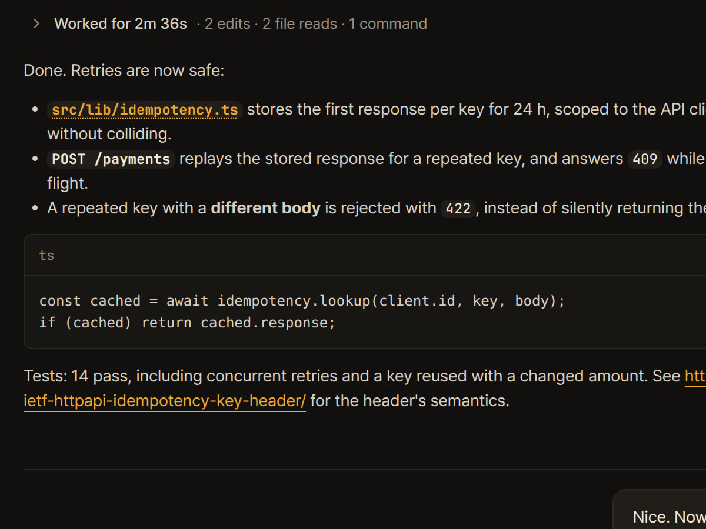
-
2/5
Open it when you want the details.
Grep, Read, Edit, Write, Bash: each row opens to its input and its output.
Every step, one click away 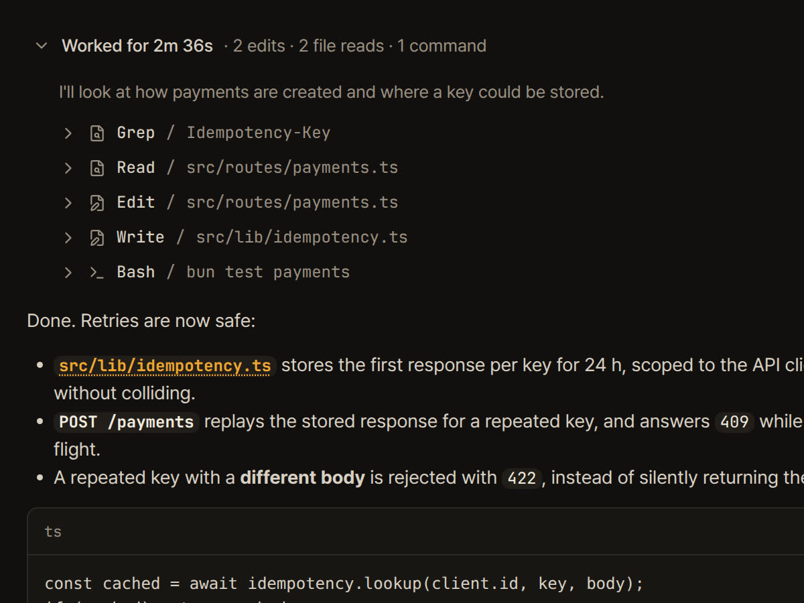
-
3/5
An answer you can read on a phone.
Headings, lists, code, tables, links and LaTeX render as a document. Copy any answer as Markdown or plain text. Long code opens at 20 lines behind Show all.
Real Markdown 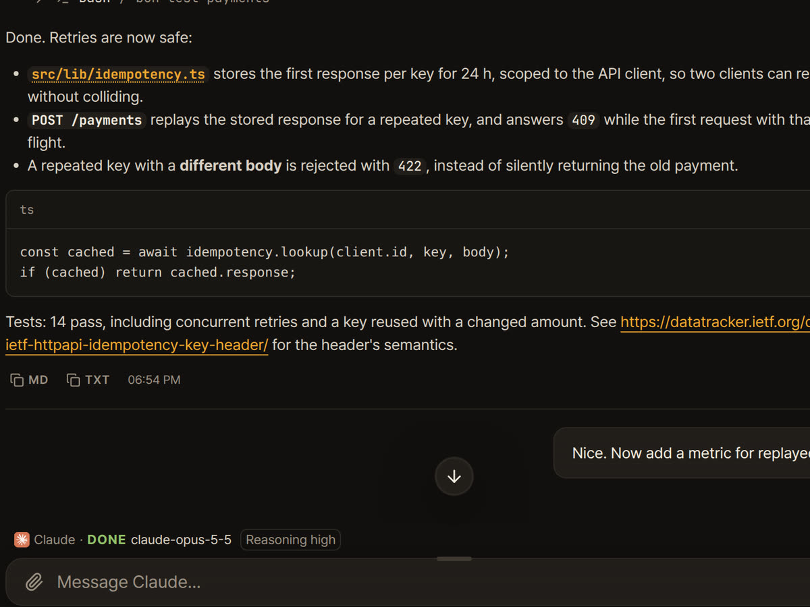
-
4/5
The plan, pinned.
The agent's todo list stays under the chat: the done count and what it is on now, or the whole list. The turn still running stays open and says Working…
2/4 · Now: expose it on /metrics 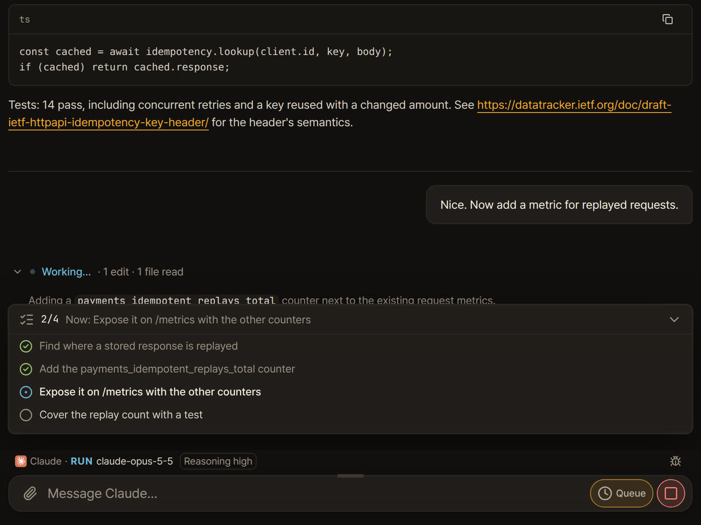
-
5/5
What's running, and how hard it thinks.
The model and reasoning effort come from what the session recorded, never from the answer text.
claude-opus-5-5 · Reasoning high 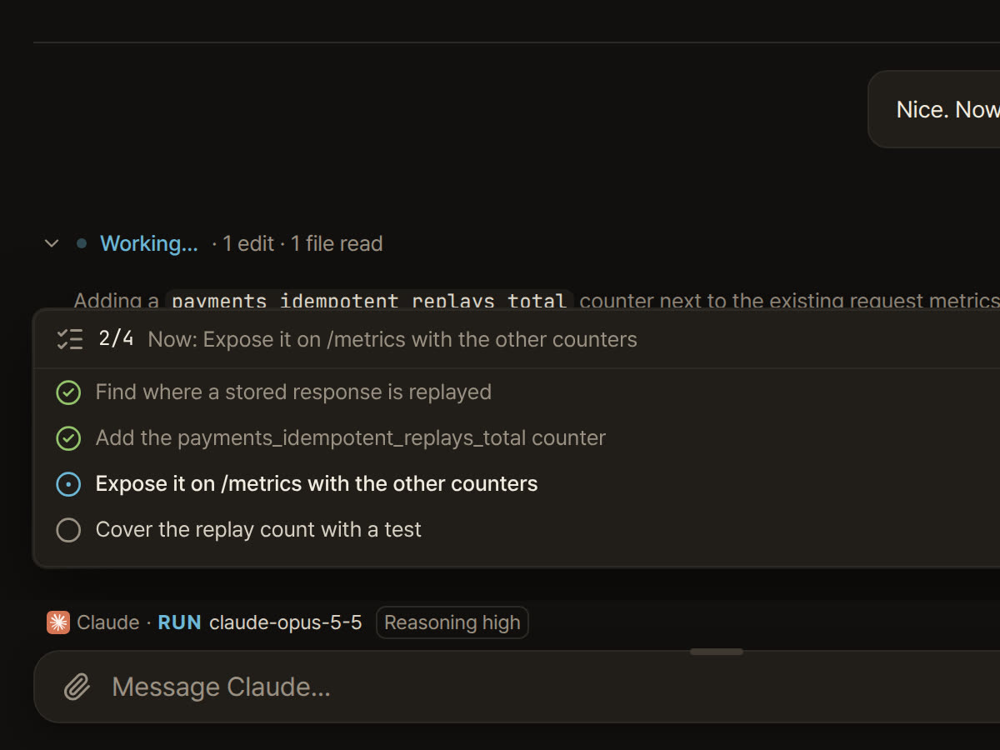
Claude Code, Codex, omp, omo, gjc: native transcripts. Anything else: the terminal's text.
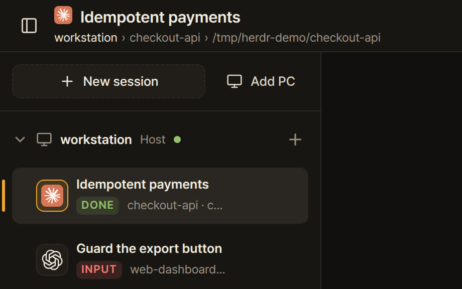
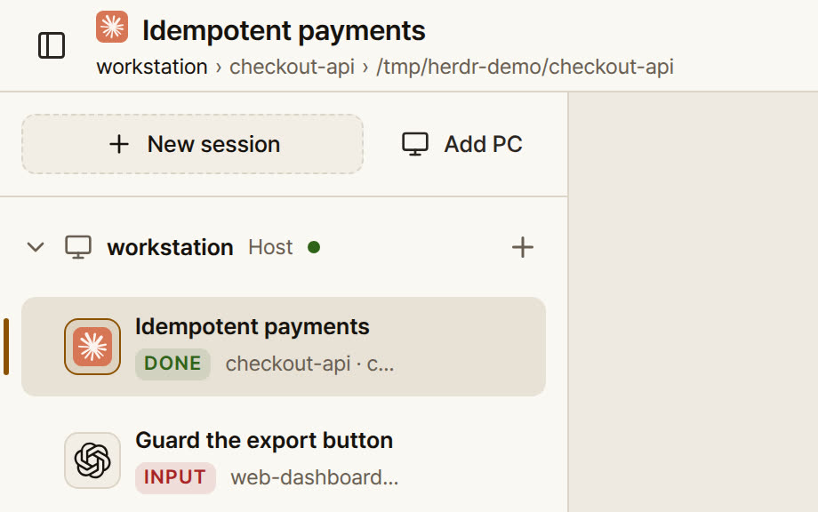
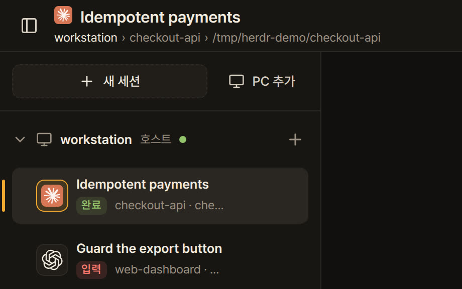
English and 한국어. Dark and light.
The film · 0:56
Fifty-six seconds of the real app.
No mock-ups. Every frame is herdr web ui running, recorded and cut like a product film.
02 · Prompts
When it asks, answer from the chat.
Approval, question and plan menus arrive as cards. Tap an option, or type its number. Before one key is sent, the server checks that the menu on screen is still the one you answered.
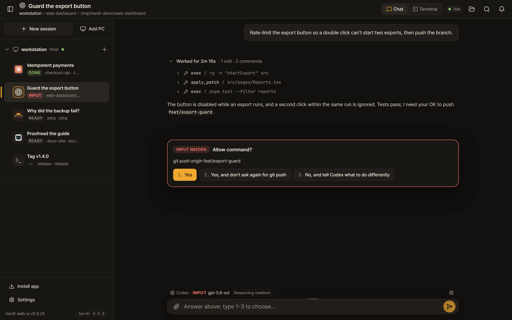
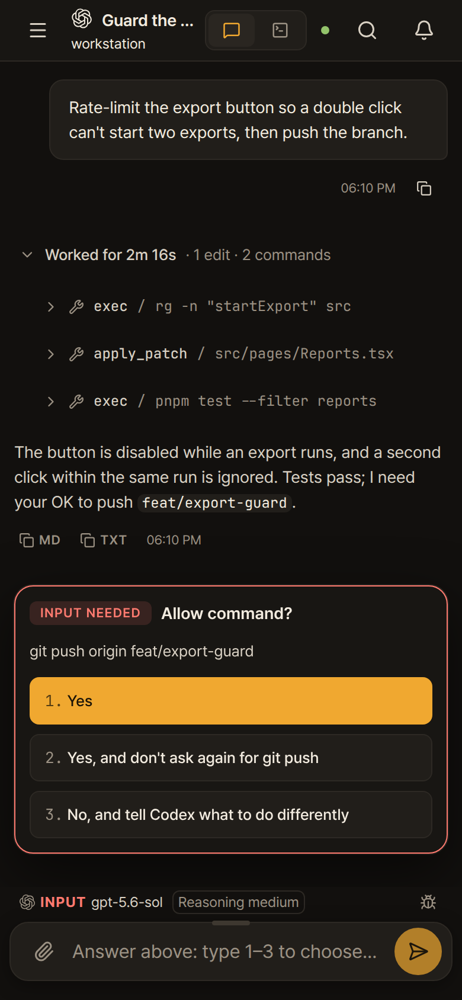
Checked, then typed
A stale tap is refused with
prompt_changedinstead of guessed.Queued, not lost
Write the next message while the agent works; it goes to that pane once it's ready.
Push alerts
Your phone is told when an agent needs you or finishes, and stays quiet if you already answered at the PC.
Prompt cards: Claude Code, Codex and omp. omo and gjc: answer in the terminal.
03 · Terminal
The real terminal, one switch away.
Flip to xterm.js on the live pane through herdr terminal attach: full-screen TUIs, raw keys and herdr's scrollback, shared with the TUI on your desk. It never takes the pane over.
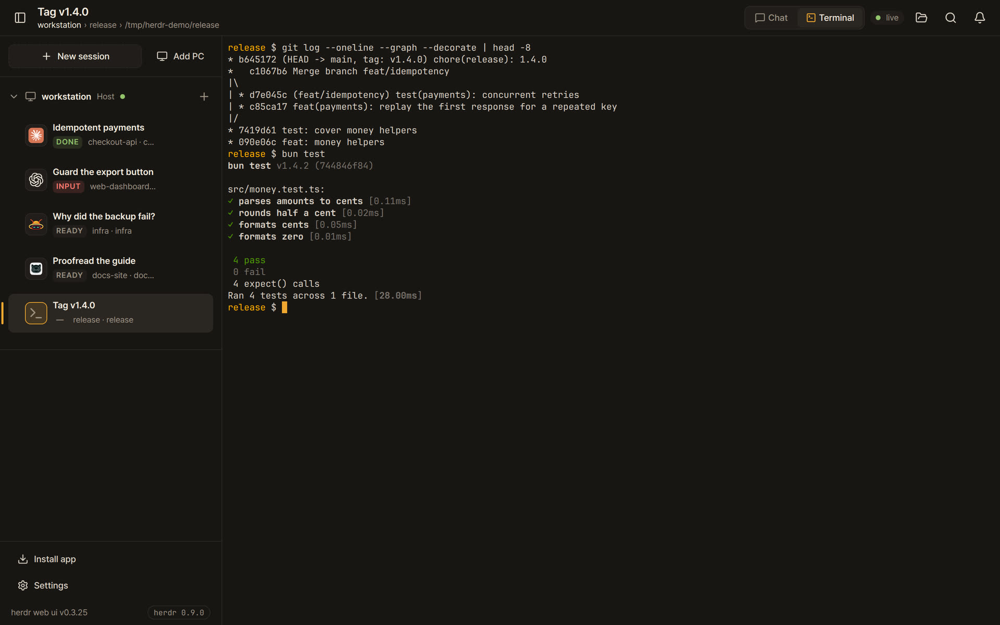

Ctrl⇧JChat ⇄ TerminalCtrl⇧KCommand palette
04 · Phone
Same panes. In your pocket.
Install it as an app. Get a push when an agent needs you or finishes. Drive the terminal with a key bar made for thumbs: Esc, Tab, Ctrl, arrows, ^C.
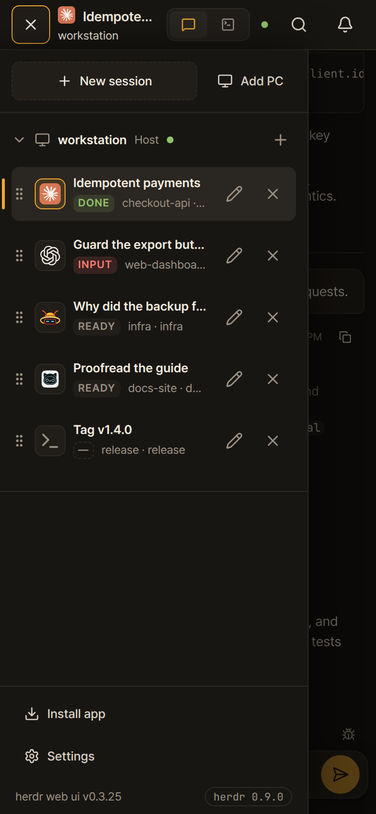
Put it on your phone
Serve it over HTTPS to install it and get push alerts. Tailscale is the shortest route: the server stays on 127.0.0.1 and Tailscale adds an HTTPS address that only devices in your tailnet can open.
The one-line installer does step 1 for you when Tailscale runs on the PC, and prints the address as a QR code.
On the PC that runs herdr, publish the app to your tailnet.
tailscale serve --bg --https=443 http://127.0.0.1:7317Open that address on your phone and install the app.
Safari: Share, then Add to Home Screen. Chrome: Install app.
Tap the bell to turn on alerts for that device.
You are told when an agent needs you or finishes. iPhone needs iOS 16.4+ and the home-screen app.
Your own Tailscale devices get in as you. Anyone else's device, or a LAN address, a public domain or a reverse proxy, is paired once with a code from Settings → Devices. Access and safety has the details.
Agents
Every agent herdr runs.
Every pane shows up with its live status, terminal and alerts. The chat view reads the agent's own session files wherever it knows where they are.
| Agent | Chat | Answer prompts from the chat |
|---|---|---|
| Claude Code | Native transcript, resolved through herdr | Approvals, questions, plan and menu picks |
| Codex | Native rollout, with tool results and commentary and final phases | Approvals and questions, queued ones included |
| omp | Native session file | Yes |
| omo | Native session file, found through the pane's process tree | Use the terminal |
| gjc | Native session file, from the session directory gjc keeps open | Use the terminal |
| Anything else | The terminal's text | Use the terminal |
Nothing in between
No wrapper.
No daemon.
No account.Claude Code, Codex, omp, omo, gjc and the rest keep running in herdr exactly as you start them. There is no wrapper command, no second daemon and no account. This app reads herdr's socket and attaches to its terminals.
Same pane.
Every screen.The pane in your herdr TUI is the same pane in your browser and on your phone, live in all of them at once. Nothing is stopped or handed over, and other Linux and macOS PCs join the sidebar over SSH.
Yours only.
127.0.0.1 by default.It runs on your machine and listens on
127.0.0.1by default. It sends nothing anywhere except GitHub, for its own updates, and your browser's push service, for alerts. Updates install in the background and roll back if the new build fails its health check.
herdr owns the processes and the scrollback.
Compare
Compared with other phone clients for herdr
All four are in the herdr plugin marketplace. Each is described here in the words of its own README and docs, and each does something this app does not.
| What | herdr web ui | collie | roamgate | herdr-remote |
|---|---|---|---|---|
| Runs as | A herdr plugin. herdr builds it, starts it and it updates itself. | Its own bridge, from a curl installer or as a herdr plugin. | Its own server, from a curl installer. | A macOS menu-bar app, plus a Python relay for the phone. |
| Drives | herdr | herdr, tmux or zellij | herdr | herdr |
| What you read | The agent's own transcript as a chat, with the work folded per turn and the todo list pinned. The live terminal for everything else. | Pane output, with a dashboard led by what needs your input. | Terminals, agent sessions, files and diffs. | An agent timeline and terminal output. |
| Answering | Prompt cards checked against the live menu, or the terminal. | Prompts as tappable buttons, quick replies, voice input. | Not in its docs | One-tap approvals from the phone, the menu bar or Telegram. |
| Reaching your phone | Your Tailscale, SSH tunnel or HTTPS proxy. Your Tailscale login gets in; other devices are paired with a code. | Tailscale serve, or your own ingress. | Its own server on your LAN with a token, native HTTPS, web push. | A free Cloudflare tunnel, and Telegram. |
| Other machines | Linux and macOS PCs over SSH, added from the sidebar. | Crews: one collie per machine behind one URL. | Not in its docs | The relay collects several machines. |
| Also | A viewer for the files agents make, web push, remote-PC bridges kept current with the app. | Six UI languages, device pairing, output search. | A file explorer with diff annotations, and it can install herdr for you. | A daily digest, a TUI, Windows support. |
Read as of September 2026. If you want tmux or zellij, diffs, Telegram or a tunnel out of the box, one of the others is the better fit.
Start with one line.
curl -fsSL https://devswha.github.io/herdr-web-ui/install.sh | sh Try it in your browserRead the README
Linux (x64, arm64) and macOS · herdr 0.9.0+ · English and 한국어 · dark and light